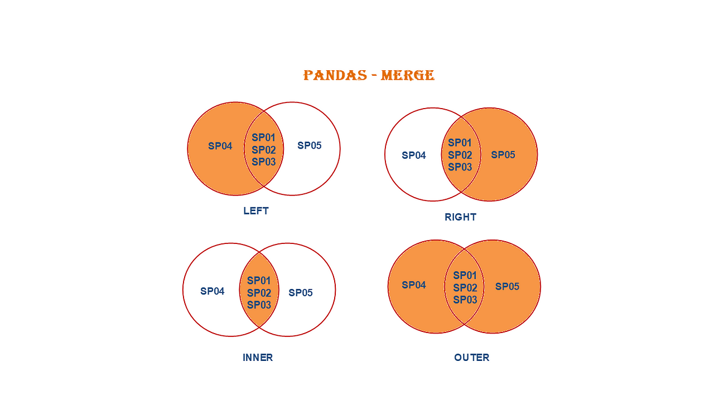

데이터프레임의 결합
Contents
2.4. 데이터프레임의 결합#
데이터를 이용하여 분석을 하는 경우 사용할 자료가 두 개 이상이 경우는 매우 흔한 일이다. 실제로 데이터 분석에서 하나의 자료만 가지고 수행하는 일은 매우 드물다.
이 절에서는 여러 개의 자료를 사용하는 경우 두 개의 자료를 서로 결합하여 새로운 자료를 만드는 것을 실습한다. 살펴 볼 내용은 다음과 같다.
데이터의 결합
식별자의 불일치
import pandas as pd
import numpy as np
import matplotlib.pyplot as plt
간단한 예제#
두 개의 데이터프레임 df1 과 df2 가 다음과 같이 주어졌다고 하자.
df1 = pd.DataFrame({
"name" : ["철수", "영이", "John"],
"age" : [23, 34, 19]
})
df1
| name | age | |
|---|---|---|
| 0 | 철수 | 23 |
| 1 | 영이 | 34 |
| 2 | John | 19 |
df2 = pd.DataFrame({
"name" : ["철수", "영이", "John"],
"sex" : ["M", "F", "M"]
})
df2
| name | sex | |
|---|---|---|
| 0 | 철수 | M |
| 1 | 영이 | F |
| 2 | John | M |
데이터프레임 df1 과 df2 에는 같은 이름을 가지는 열 name 이 있다. 우리는 두 개의 데이터프레임을 합쳐서 나이(age)와 성(sex) 이 모두 포함된 새로운 데이터프레임을 만들려고 한다.
이렇게 공통으로 포함된 열의 정보를 이용하여 두 개의 데이터프레임을 결합하려면 pandas 라이브러리의 merge() 함수 를 이용한다.
merge()함수의 첫 번째(왼쪽)와 두 번째 인자(오른쪽)에는 결합할 데이터프레임의 이름을 넣어준다.앞에
pd.를 붙여서pd.merge()로 사용하는 것은 함수merge()가 pandas 라이브러리에 있다는 것을 알려준다.선택문
on=에 두 데이터프레임에 결합의 기준이 되는 열이름을 문자열로 지정해준다. 결합의 기준으로 사용되는 열이름은 두 개의 데이터프레임에 모두 존재해야 한다.자료의 결합에 사용되는 공통으로 포함된 열의 내용을 식별자(key, identifier,..) 라고 부른다. 이 예제에서 식별자는 사람의 이름이다.
다음 코드의 결과를 먼저 보자.
pd.merge(df1, df2, on="name")
| name | age | sex | |
|---|---|---|---|
| 0 | 철수 | 23 | M |
| 1 | 영이 | 34 | F |
| 2 | John | 19 | M |
두 개의 데이터프레임이 지정된 열 name 에 의하여 결합되어 나이(age)와 성(sex)이 같이 나타나게 된다.
식별자의 불일치#
만약 두 개의 데이터프레임에 있는 식별자에 포함된 자료가 다르면 어떻게 될까?
다음과 같이 John 의 자료가 빠져 있는 데이터프레임 df3을 df1 과 결합해 보자.
df3 = pd.DataFrame({
"name" : ["철수", "영이"],
"weight" : [55, 44]
})
df3
| name | weight | |
|---|---|---|
| 0 | 철수 | 55 |
| 1 | 영이 | 44 |
pd.merge(df1, df3, on="name")
| name | age | weight | |
|---|---|---|---|
| 0 | 철수 | 23 | 55 |
| 1 | 영이 | 34 | 44 |
위의 결과에서 John 의 자료가 사라져 버렸다. 물론 몸무게 값이 없는 John 의 자료가 필요없을 수도 있지만 많은 경우 자료를 유지해야 한다.
이렇게 식별자의 항목이 다른 경우, 결합의 기준이 되는 식별자를 데이터프레임의 위치로 지정할 수 있다. 위에서 함수 merge()를 설명할 때 사용되는 데이터프레임의 위치에 따라서 왼쪽 (첫 번째 인자) 과 오른쪽 (두 번째 인자)으로 나타냈다.
pd.merge(left_df, right_df, on="name", how="inner")
how='left': 식별자는 왼쪽 데이터프레임에만 있는 것으로 선택how='right': 식별자는 오른쪽 데이터프레임에만 있는 것으로 선택how='inner': 식별자는 두 데이터프레임에 공통인 것으로 선택how='outer': 식별자는 두 데이터프레임에 나타난 모든 것으로 선택
식별자를 선택하는 선택명령문 how= 을 지정하지 않으면 자동으로 how='inner' 이 지정된다.

이제 결합시 기준이 되는 식별자가 왼쪽에 있는 데이터프레임 df1 에 있다는 것을 선택명령문 how='left' 로 알려주자.
pd.merge(df1, df3, on="name", how='left')
| name | age | weight | |
|---|---|---|---|
| 0 | 철수 | 23 | 55.0 |
| 1 | 영이 | 34 | 44.0 |
| 2 | John | 19 | NaN |
이제 John 의 자료가 나타나고 John 의 키는 결측값(NaN) 으로 표시된다.
만약 두 개의 식별자에 서로 다른 내용이 나타나면 어떻게 될까?
이제 새로운 사람 흥민의 자료를 가진 데이터프레임 df4를 df1 과 결합하는 예를 살펴보자. 아래 코드에서 선택명령문 how= 에 지정된 문자열에 따라서 결합의 결과가 어떻게 다른지 보자.
df4 = pd.DataFrame({
"name" : ["철수", "영이", "흥민"],
"height" : [167, 175, 183]
})
df4
| name | height | |
|---|---|---|
| 0 | 철수 | 167 |
| 1 | 영이 | 175 |
| 2 | 흥민 | 183 |
위에서 본 바와 같이 선택명령문 how='left'이 결합시 기준이 데이터프레임 df1 에 있다는 것을 알려준다.
pd.merge(df1, df4, on="name", how='left')
| name | age | height | |
|---|---|---|---|
| 0 | 철수 | 23 | 167.0 |
| 1 | 영이 | 34 | 175.0 |
| 2 | John | 19 | NaN |
선택명령문 how='right'이 결합시 기준이 데이터프레임 df4 에 있다는 것을 알려준다.
pd.merge(df1, df4, on="name", how='right')
| name | age | height | |
|---|---|---|---|
| 0 | 철수 | 23.0 | 167 |
| 1 | 영이 | 34.0 | 175 |
| 2 | 흥민 | NaN | 183 |
선택명령문 how='inner'이 결합시 기준이 데이터프레임 df1 과 df4 에서 공통된 것임을 알려준다.
pd.merge(df1, df4, on="name", how='inner')
| name | age | height | |
|---|---|---|---|
| 0 | 철수 | 23 | 167 |
| 1 | 영이 | 34 | 175 |
선택명령문 how='outer'이 결합시 기준이 데이터프레임 df1 과 df4의 모든 것임을 알려준다.
pd.merge(df1, df4, on="name", how='outer')
| name | age | height | |
|---|---|---|---|
| 0 | 철수 | 23.0 | 167.0 |
| 1 | 영이 | 34.0 | 175.0 |
| 2 | John | 19.0 | NaN |
| 3 | 흥민 | NaN | 183.0 |
두 개 자료의 결합: 예제#
이번에는 가게금융복지 조사에서 얻은 금용에 대한 정보를 가진 자료와 소비에 대한 정보를 가진 자료를 결합하는 예제를 살펴보자.
먼저 가게금융복지 조사에서 얻은 금용에 대한 정보를 가진 데이터프레임 df1 을 다음과 같이 만든다.
df1 = pd.read_csv("https://uos-bigdata.github.io/lab_data/docs/assets/data_lab_depart/2016_housemasterdata_part1.csv", encoding='cp949',index_col=False)
df1 = df1[['조사연도','가구고유번호','수도권여부','가구주_성별코드','가구원수', '부채보유여부', '자산금액', '부채금액', '근로소득', '사업소득', '재산소득']]
df1.head(5)
| 조사연도 | 가구고유번호 | 수도권여부 | 가구주_성별코드 | 가구원수 | 부채보유여부 | 자산금액 | 부채금액 | 근로소득 | 사업소득 | 재산소득 | |
|---|---|---|---|---|---|---|---|---|---|---|---|
| 0 | 2016 | 10200111 | 수도권 | 남자 | 4 | 부채 보유 | 76202 | 22200 | 4000 | 5000 | 0 |
| 1 | 2016 | 10200121 | 수도권 | 남자 | 4 | 부채 보유 | 116466 | 45000 | 3000 | 0 | 0 |
| 2 | 2016 | 10200151 | 수도권 | 여자 | 3 | 부채 보유 | 125360 | 8000 | 12600 | 0 | 0 |
| 3 | 2016 | 10200161 | 수도권 | 남자 | 5 | 부채 보유 | 79406 | 25500 | 0 | 4200 | 0 |
| 4 | 2016 | 10200171 | 수도권 | 남자 | 2 | 부채 보유 | 45600 | 27800 | 12420 | 0 | 0 |
다음으로 같은 조사에서 얻어진 가구별 소비와 지출에 대한 자료를 불러외서 데이터프레임 df2를 만든다.
df2 = pd.read_csv("https://uos-bigdata.github.io/lab_data/docs/assets/data_lab_depart/2016_housemasterdata_part2.csv", encoding='cp949',index_col=False)
df2.head(5)
| 가구고유번호 | 소비지출 | 지출_소비지출_식료품_외식비 | 지출_소비지출_주거비 | 지출_소비지출_교육비_보육료포함 | 지출_소비지출_의료비 | 지출_소비지출_교통비 | 지출_소비지출_통신비 | 지출_소비지출_경조비및기타소비지출 | |
|---|---|---|---|---|---|---|---|---|---|
| 0 | 10200111 | 0 | 0 | 0 | 0 | 0 | 0 | 0 | 0 |
| 1 | 10200121 | 0 | 0 | 0 | 0 | 0 | 0 | 0 | 0 |
| 2 | 10200151 | 3430 | 800 | 390 | 0 | 200 | 430 | 310 | 1300 |
| 3 | 10200161 | 3176 | 1200 | 240 | 960 | 36 | 120 | 240 | 380 |
| 4 | 10200171 | 2905 | 1060 | 190 | 0 | 35 | 700 | 120 | 800 |
이제 두 개의 데이터프레임 df1 과 df2 를 가구고유번호 를 식별자로 하여 결합해 보자.
df_m = pd.merge(df1, df2, on="가구고유번호", how='left')
df_m.head(5)
| 조사연도 | 가구고유번호 | 수도권여부 | 가구주_성별코드 | 가구원수 | 부채보유여부 | 자산금액 | 부채금액 | 근로소득 | 사업소득 | 재산소득 | 소비지출 | 지출_소비지출_식료품_외식비 | 지출_소비지출_주거비 | 지출_소비지출_교육비_보육료포함 | 지출_소비지출_의료비 | 지출_소비지출_교통비 | 지출_소비지출_통신비 | 지출_소비지출_경조비및기타소비지출 | |
|---|---|---|---|---|---|---|---|---|---|---|---|---|---|---|---|---|---|---|---|
| 0 | 2016 | 10200111 | 수도권 | 남자 | 4 | 부채 보유 | 76202 | 22200 | 4000 | 5000 | 0 | 0 | 0 | 0 | 0 | 0 | 0 | 0 | 0 |
| 1 | 2016 | 10200121 | 수도권 | 남자 | 4 | 부채 보유 | 116466 | 45000 | 3000 | 0 | 0 | 0 | 0 | 0 | 0 | 0 | 0 | 0 | 0 |
| 2 | 2016 | 10200151 | 수도권 | 여자 | 3 | 부채 보유 | 125360 | 8000 | 12600 | 0 | 0 | 3430 | 800 | 390 | 0 | 200 | 430 | 310 | 1300 |
| 3 | 2016 | 10200161 | 수도권 | 남자 | 5 | 부채 보유 | 79406 | 25500 | 0 | 4200 | 0 | 3176 | 1200 | 240 | 960 | 36 | 120 | 240 | 380 |
| 4 | 2016 | 10200171 | 수도권 | 남자 | 2 | 부채 보유 | 45600 | 27800 | 12420 | 0 | 0 | 2905 | 1060 | 190 | 0 | 35 | 700 | 120 | 800 |
두 데이터프레임의 크기가 같고 구성원이 같기 때문에 결합된 데이터프레임도 같은 수의 자료를 가진다.
df1.shape
(18273, 11)
df2.shape
(18273, 9)
df_m.shape
(18273, 19)
요약#
두 개의 데이터프레임을 결합하는 경우 pandas 라이브러리의 함수 merge() 를 사용하며 식별자가 포함된 공통의 열은 on= 으로 지정한다. 결합의 방향을 how=로 지정한다.